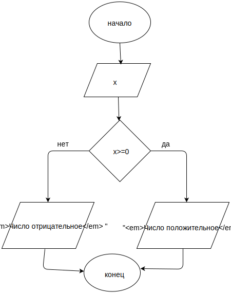
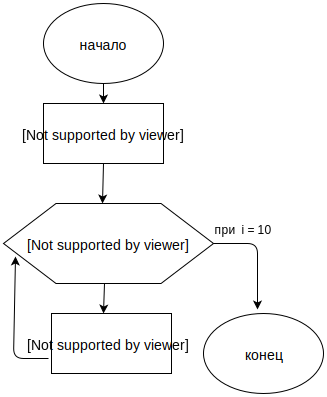

homework-01
Радюк Елена
1. Нарисуйте блок-схему алгоритма, который проверяет значение входного параметра x, и если это значение больше или равно 0,
то возвращает в качестве результата строку "Число положительное", в противном случае - строку "Число отрицательное"

2. Нарисуте блок-схему алгоритма суммирования 10 чисел, кратных 5 ( начиная с 0 )

Код по схеме 2
var num = 0;
var sum = 0;
for (var i=0; i<10; i++) {
num+=5;
sum+=num;
}
console.log(sum);
console.log(num);
3. Напилите кодец, который работает с массивом произвольных целых чисел
var numbers = [ 254, 115, 78, 25, 91, 45, 37 ]
Ваш скрипт должен вывести в консоль все числа больше 50
var numbers = [ 254, 115, 78, 25, 91, 45, 37 ];
for (var i=0; i < numbers.length; i++) {
if(numbers[i]>50) console.log(numbers[i]);
}